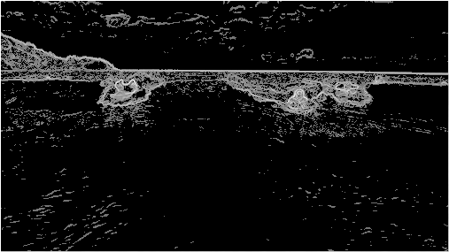
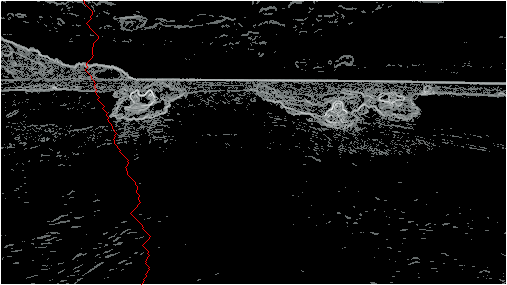

From Java to the Metal
Pitting Rust against the JVM
Caspar Krieger / Java Dev @ Atlassian
The other side of Rust
More than a better language for C/C++ devs
Systems programming for the masses
For me, C++ is a massive footgun:
- Pointer arithmetic, use after free, etc
- Is X undefined behaviour?
Why even bother as a Java dev?
- Infrastructure needs C-level code (e.g. Apache modules)
- Fast & easy to distribute command line tools
- Game development as a hobby
Question
How do you get a Java dev to learn a new language like Rust?
Answer
A: Do the Java-based Algorithms Coursera course
... in Rust
... shit, I've replaced one problem by another
How do I stay motivated for the coursera course?
Algorithms study group
"For people who want to brush up on Algorithms"
Most people used Java (for auto-marker), but also saw:
- Scala, Haskell
- Python, Perl
- Go, C#
A Competition!
Everybody wants to prove their language is the best.
let's optimize some real Rust
but first, a big disclaimer
My Rust experience level:
- 4 months, ~4k lines of Rust
- Code not reviewed
- I (try to) write Rust like it's Scala
- Negligible C/C++ experience
If Huon hadn't bribed with me a t-shirt, I'd be in the audience.
Our problem: seam carving
- A clever way to resize images
- Remove the least interesting vertical slices of the image


First calculate pixel energies
Energy is how interesting the pixel is.
Why? Want to avoid removing interesting pixels.
Now find min-energy seam
From each pixel, either go down + left, down, or down + right, depending on which pixel has the least energy.
Then remove this seam (and rinse and repeat).
Calculating min-energy seam
For each pixel, see if using this pixel to get to
each next pixel option results in a better seam
// rust-like pseudocode
for pixel in all_pixels {
// p <- p is `pixel`
// 1 2 3 <- `pixel_option` is one of the three pixels below `pixel`
for pixel_option in find_pixel_options(pixel) {
if is_best_path_to_pixel_option(pixel, pixel_option) {
record_best_path_to_pixel_option(pixel, pixel_option);
}
}
}
(If `pixel` is on edge of image, there are only 2 `pixel_option`s)
Same again, but now in Rust
pub fn find_seam(&mut self, width: usize, height: usize) -> Vec<usize> {
for pixel in 0..(num_pixels - width) {
let next_pixel_options = if pixel % width == 0 { // first column
vec![pixel + width, pixel + width + 1]
} else if (pixel + 1) % width == 0 { // last column
vec![pixel + width - 1, pixel + width]
} else {
vec![pixel + width - 1, pixel + width, pixel + width + 1]
};
for pixel_option in next_pixel_options {
if self.dist_to[pixel_option] >
self.dist_to[pixel] + self.energy[pixel_option] {
self.dist_to[pixel_option] =
self.dist_to[pixel] + self.energy[pixel_option];
self.prev_vertex[pixel_option] = pixel;
}
}
}
// [finally loop through self.prev_vertex to find the best path]
}
How does that perform?
- ~1600ms to remove 300 pixels from a 507 x 285 image
- Worse than Java :(
- Let's profile it to see how make it faster!
Readable profiling results
- debug builds (
cargo build) are not optimised - release builds (
cargo build --release) have no debug info - solution: add debug info to release builds
# in Cargo.toml
[profile.release]
debug = true
Valgrind, or rather, Callgrind
$ valgrind --tool=callgrind --callgrind-out-file=callgrind.out \
./target/release/2-seam-carving test-input.png -W 100
$ callgrind_annotate callgrind.out
callgrind_annotate gives you a list of functions
(sorted by executed instruction count)
- Pro tip #1: avoid profiling cargo! Run binary directly.
- Pro tip #2: use smaller inputs - callgrind is slow.
kcachegrind
- callgrind is based on another valgrind tool, cachegrind
- kcachegrind handles output files from both
- much nicer output than callgrind_annotate
- also handles recursive code properly
Tip: go to Settings > Configure Kcachegrind > Annotations,
then add Rust source code dir.
Cause of memory allocations
pub fn find_seam(&mut self, width: usize, height: usize) -> Vec<usize> {
for pixel in 0..(num_pixels - width) {
let next_pixel_options = if pixel % width == 0 {
vec![pixel + width, pixel + width + 1] // ALLOCATION
} else if (pixel + 1) % width == 0 {
vec![pixel + width - 1, pixel + width] // ALLOCATION
} else {
vec![pixel + width - 1, pixel + width, pixel + width + 1] // ALLOCATION
};
for pixel_option in next_pixel_options {
if self.dist_to[pixel_option] >
self.dist_to[pixel] + self.energy[pixel_option] {
self.dist_to[pixel_option] =
self.dist_to[pixel] + self.energy[pixel_option];
self.prev_vertex[pixel_option] = pixel;
}
}
}
// [finally loop through self.prev_vertex to find the best path]
}
Avoiding heap allocations
pub fn find_seam(&mut self, width: usize, height: usize) -> Vec<usize> {
for pixel in 0..(num_pixels - width) {
let tmp_len_2;
let tmp_len_3;
let next_pixel_options: &[usize] = if pixel % width == 0 { // first column
tmp_len_2 = [pixel + width, pixel + width + 1];
&tmp_len_2
} else if (pixel + 1) % width == 0 { // last column
tmp_len_2 = [pixel + width - 1, pixel + width];
&tmp_len_2
} else {
tmp_len_3 = [pixel + width - 1, pixel + width, pixel + width + 1];
&tmp_len_3
};
// (no changes below this point)
for pixel_option in next_pixel_options {
if self.dist_to[pixel_option] >
self.dist_to[pixel] + self.energy[pixel_option] {
self.dist_to[pixel_option] =
self.dist_to[pixel] + self.energy[pixel_option];
self.prev_vertex[pixel_option] = pixel;
}
}
}
// [finally loop through self.prev_vertex to find the best path]
}
or use a closure
pub fn find_seam(&mut self, width: usize, height: usize) -> Vec<usize> {
let mut relax_edge = |from_pixel: usize, to_pixel: usize| {
if self.dist_to[to_pixel] > self.dist_to[from_pixel] + self.energy[to_pixel] {
self.dist_to[to_pixel] = self.dist_to[from_pixel] + self.energy[to_pixel];
self.prev_vertex[to_pixel] = from_pixel;
}
};
// each pixel in the image has an edge to the pixel below and the pixel to the left and right of that
for pixel in 0..(num_pixels - width) {
if pixel % width == 0 { // first column
relax_edge(pixel, pixel + width);
relax_edge(pixel, pixel + width + 1);
} else if (pixel + 1) % width == 0 { // last column
relax_edge(pixel, pixel + width - 1);
relax_edge(pixel, pixel + width);
} else {
relax_edge(pixel, pixel + width - 1);
relax_edge(pixel, pixel + width);
relax_edge(pixel, pixel + width + 1);
}
}
}
// [finally loop through self.prev_vertex to find the best path]
}
Now what?
kcachegrind says the slowest line of code now is:
if self.dist_to[to_pixel] > self.dist_to[from_pixel] + self.energy[to_pixel] {
but I don't see an easy way to speed that up.
Using Linux's perf instead
$ perf record ./target/release/2-seam-carving test-input.png -W 300
$ perf report
- Bonus:
perfis faster so remove a full 300 pixels
Joys of nested loops
for y in 0..(height - 1) {
let height_offset = y * width;
relax_edge(height_offset, height_offset + width);
relax_edge(height_offset, height_offset + width + 1);
for x in 1..(width - 1) {
let pixel = height_offset + x;
relax_edge(pixel, pixel + width - 1);
relax_edge(pixel, pixel + width);
relax_edge(pixel, pixel + width + 1);
}
let last_col_pixel = height_offset + width - 1;
relax_edge(last_col_pixel, last_col_pixel + width - 1);
relax_edge(last_col_pixel, last_col_pixel + width);
}
Ideas for more speed?
- Indexing is still slow - cache & use windows when iterating?
- Copy paste closure and manually cache data from earlier checks
- Cheat by using parallelism ;-)
unsafe { #yolo }
unsafe {
let mut relax_edge = |from_pixel: usize, to_pixel: usize| {
if *self.dist_to.get_unchecked(to_pixel) >
*self.dist_to.get_unchecked(from_pixel) +
*self.energy.get_unchecked(to_pixel) {
*self.dist_to.get_unchecked_mut(to_pixel) =
*self.dist_to.get_unchecked(from_pixel) +
*self.energy.get_unchecked(to_pixel);
*self.prev_vertex.get_unchecked_mut(to_pixel) = from_pixel;
}
};
}
Unsafety everywhere takes us from 450 ms to 300 ms
Useful: quantifies cost of bounds checking
Recap of gains
Basic version 1.65 s ||||||||||||||||
Avoid per pixel heap allocations 1.25 s ||||||||||||
Use closure rather than stack allocated array 1.22 s ||||||||||||
Cache modulo when finding edges of image .90 s |||||||||
Use nested loops to avoid using modulus .44 s ||||
Bypass bounds checking by using unsafe indexing .31 s |||
~4x better performance!
(or ~5x better if using unsafe)
Thanks!
Seam carving code for each step of gains at
github.com/caspark/2015-05-rust-perf-talk-code
Slides + scripts to benchmark & profile each step at github.com/caspark/2015-05-rust-perf-talk